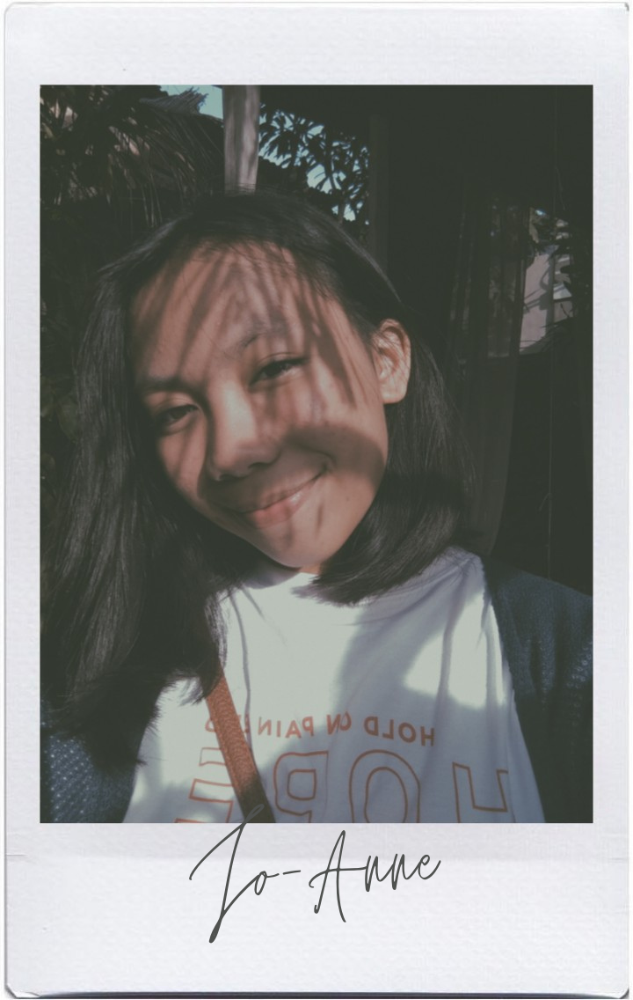
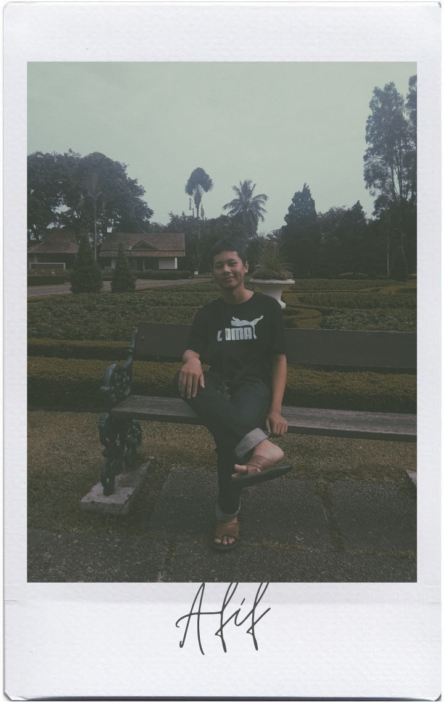
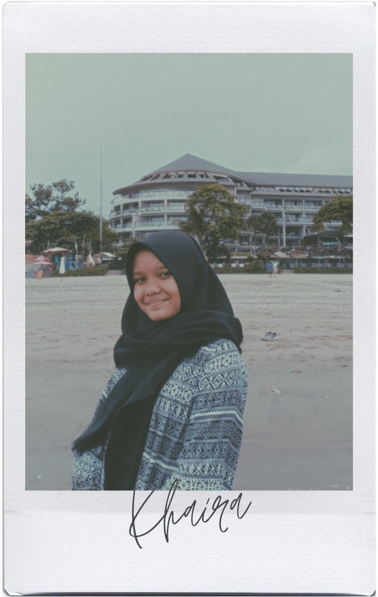
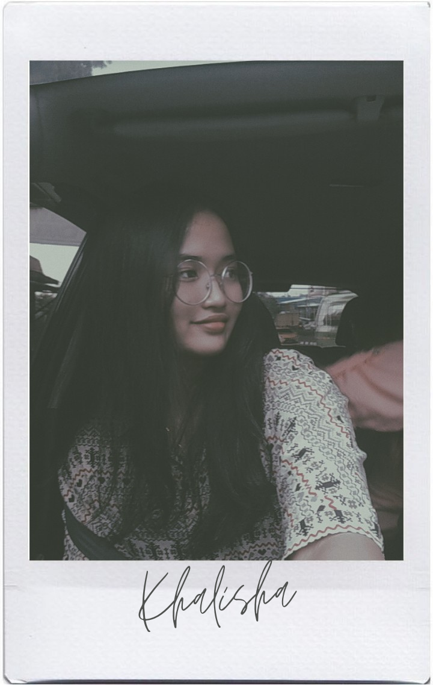
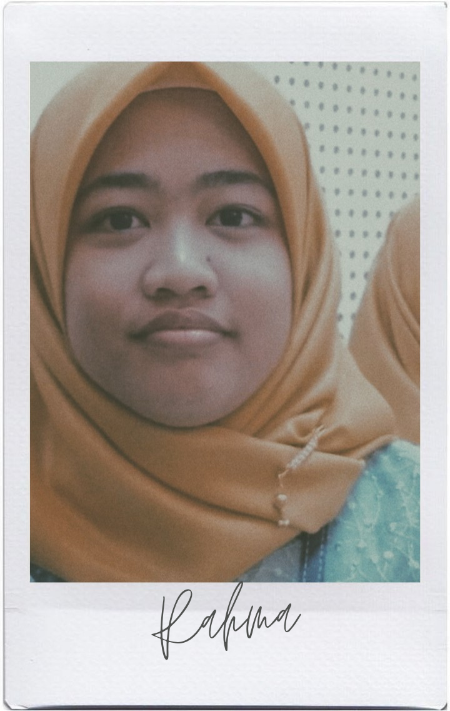
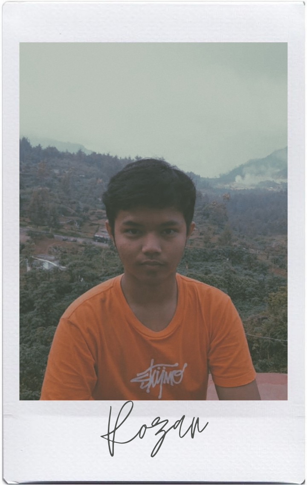
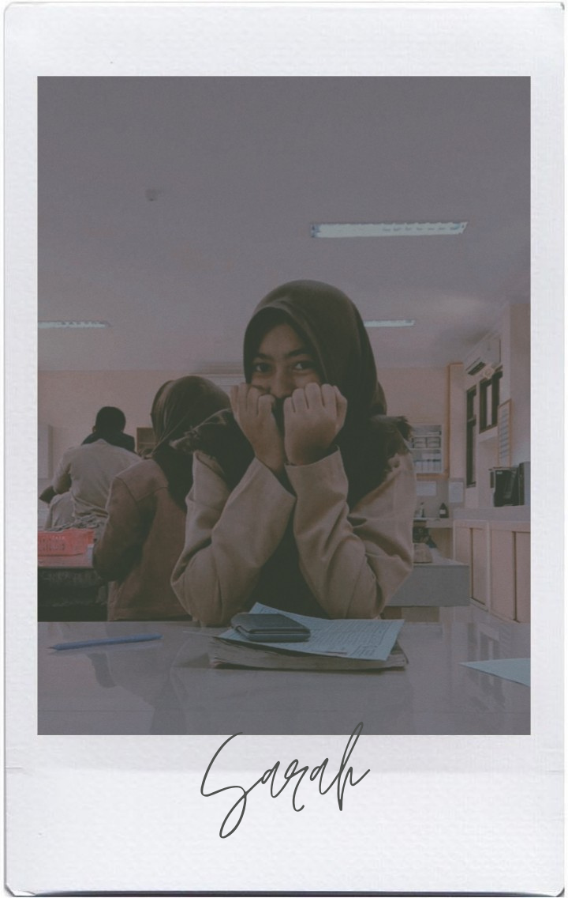

About Us
People Behind This Website
The one who's in charge. Namanya Joseph Batara Sibarani. Kerjanya memantau anggotanya dan membantu temannya yang kesusahan. Baik sekali bukan? Dia mengerjakan laman Home dan merangkap tugas sebagai Programmer.
The one who's in charge (again). Namanya Jo-Anne St.Claire. Tugasnya sama seperti Joseph karena dia wakilnya. Merangkap tugas sebagai bagian web designer dan mengerjakan laman About Us
The web designer. Namanya Afif Dwi Julianandi. Tugasnya mengumpulkan gambar-gambar yang berhubungan dengan konten website. Dan juga mengerjakan laman Asal Mula.
Content Searcher. Namanya Khaira Ardya Afiadinanti. Tugasnya mencari konten yang berhubungan dengan website ini. Dia yang mengerjakan laman Gejala.
Programmer. Namanya Khalisha Marsera. Dia yang membuat website ini bersama dengan rekan coding lainnya. Dia juga mengerjakan laman Pencegahan dan Pengobatan.
The web designer. Namanya Rahma Sabrina. Tugasnya mencari gambar yang berhubungan dengan konten website ini. Dia yang mengerjakan laman Peran Pemerintah dan Masyarat.
Programmer. Namanya Rozan Wiraadmadja. Dia yang membuat website ini bersama dengan rekan coding lainnya. Dia juga mengerjakan laman Kawasan Terinfeksi dan Peta Penyebaran
Content Searcher. Namanya Sarah Benazir. Tugasnya mencari konten yang berhubungan dengan website ini. Dia yang mengerjakan laman Action Plan.